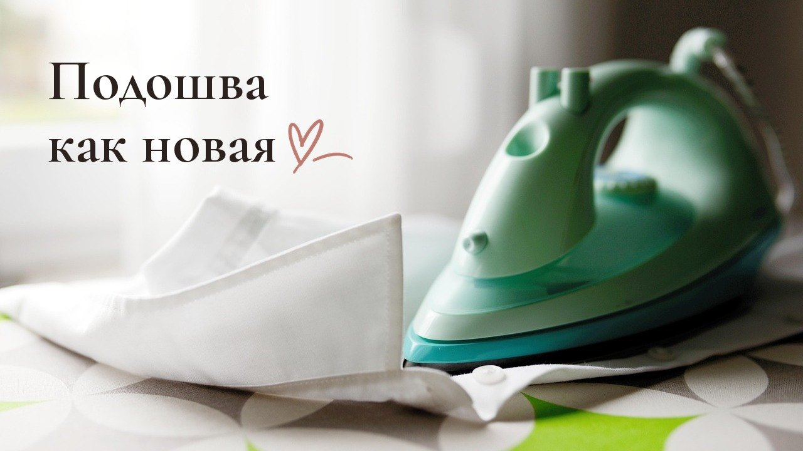
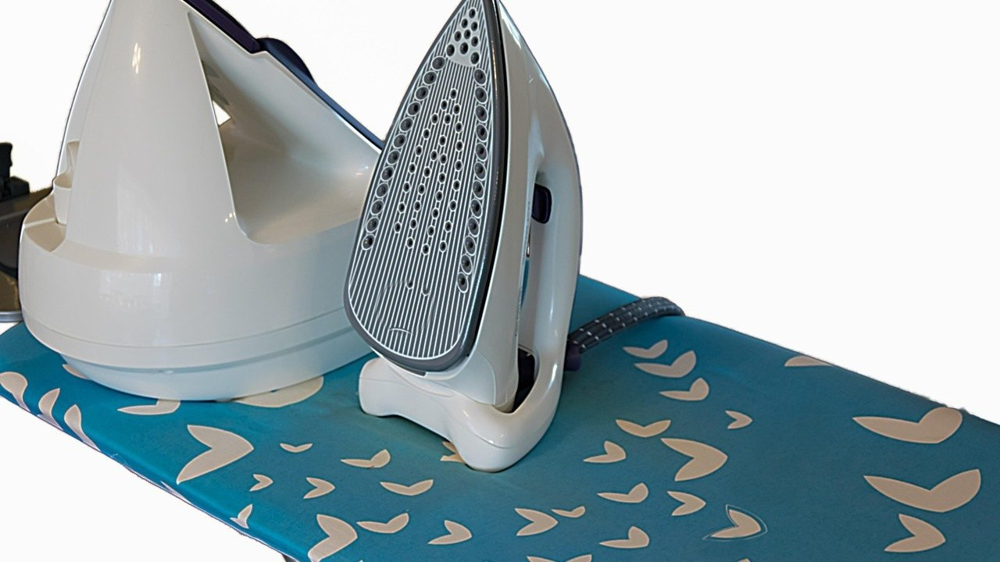
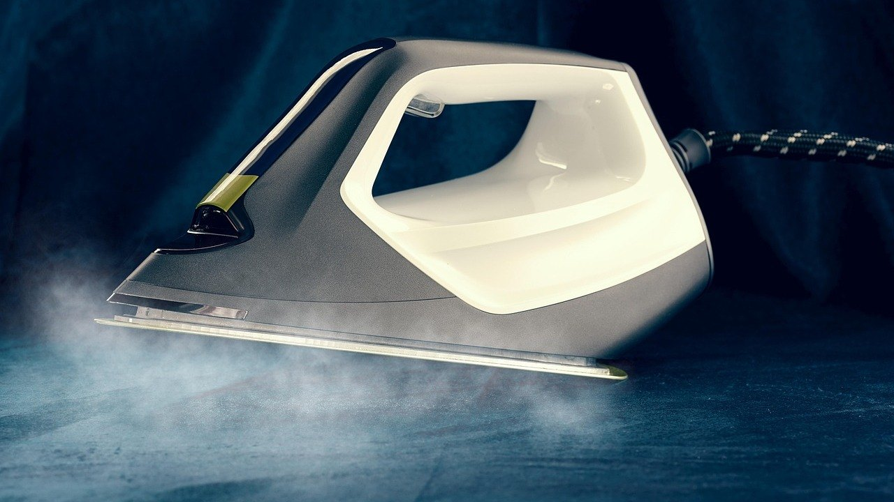

Как почистить утюг от нагара в домашних условиях: 5 ошибок, из-за которых подошва снова пригорает

Как почистить утюг от нагара, обычно вспоминают в самый неудобный момент: рубашка нужна через десять минут, а на подошве тёмное пятно, которое тянет ткань и оставляет следы.
У нас утюг работает почти каждый день, одни школьные вещи дочки чего стоят. Поэтому подошву я замечаю сразу, как только она начинает цеплять ткань.
Нагар не появляется за один раз. Он копится из мелочей: капли крахмала, ворсинки, расплавленная синтетика, накипь из воды. Подошва становится шершавой, утюг скользит хуже, а потом начинает пачкать светлые вещи.
Хорошая новость: почистить утюг можно тем, что есть дома. А вот несколько привычных способов только портят подошву, и нагар после них возвращается быстрее.
Нож и металлическая губка: слишком смело
Самое быстрое желание: соскрести нагар чем-нибудь твёрдым. Но ножом, металлической губкой или абразивным порошком легко поцарапать подошву, особенно с тефлоновым или керамическим покрытием.
Что делать: тереть только мягкой тканью или губкой без жёсткого слоя, а нагар сначала размягчить.

Царапины на подошве как ступеньки: в них потом цепляется новый нагар. Поэтому одна неудачная чистка добавляет работы на годы вперёд.
Чистить холодный утюг изо всех сил
На холодной подошве нагар держится крепко, и его приходится тереть долго. От этого устают руки, а покрытие страдает.
Что делать: нагреть утюг до средней температуры, выключить из розетки и чистить, пока подошва тёплая.
Тёплый нагар размягчается и снимается легче. Главное, чтобы утюг был уже выключен: так спокойнее и безопаснее.
Соль на газете для любого утюга
Старый способ с солью, рассыпанной на бумаге, правда снимает нагар. Но крупная соль работает как наждак и подходит только для обычной металлической подошвы.
Что делать: для тефлона и керамики протирать тёплую подошву тканью, смоченной в растворе лимонной кислоты или уксуса пополам с водой.
Для упрямых пятен подойдёт паста из соды с водой, нанесённая на ткань, а не на подошву. Потом подошву протирают чистой влажной тряпкой и проглаживают ненужный кусок хлопка.
Про отверстия для пара забыли
Подошва может блестеть, а в отверстиях для пара остаётся накипь. Через них потом летят коричневые капли прямо на белую рубашку.
Что делать: прочищать отверстия ватной палочкой, смоченной в уксусном растворе, а резервуар раз в месяц промывать раствором лимонной кислоты.

После такой промывки утюг несколько раз пропаривают над раковиной или старым полотенцем, чтобы вышли остатки. Воду в резервуар лучше наливать фильтрованную: накипи будет меньше, а утюг прослужит дольше.
Синтетика на высокой температуре
Чаще всего свежий нагар появляется после того, как горячим утюгом прошлись по синтетике или по вещи с принтом. Ткань плавится и прилипает к подошве.
Что делать: гладить синтетику на самом слабом режиме, а вещи с рисунком и тонкие ткани через хлопковую ткань или марлю.
Это экономит и подошву, и вещи. Ярлычок с режимом глажки на вещи кажется мелочью, но именно он спасает от пятна на половину подошвы.
Если что-то всё-таки прилипло, не нужно ждать, пока утюг остынет и пятно засохнет. Выключите его и сразу протрите тёплую подошву сложенной хлопковой тканью: свежая синтетика снимается гораздо легче.
Если запомнить только одно
Нагар легче не допустить, чем отчистить. Протереть тёплый выключенный утюг мягкой влажной тканью после глажки занимает полминуты, и подошва долго остаётся гладкой.
А чем вы чистите утюг: солью, лимонной кислотой или специальным карандашом?